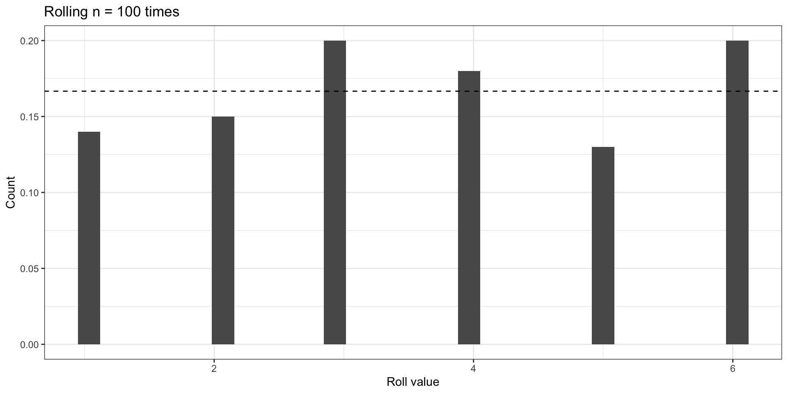
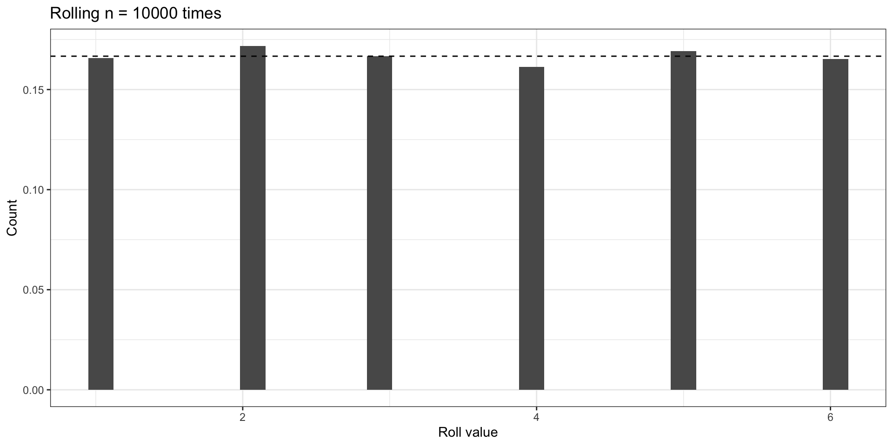
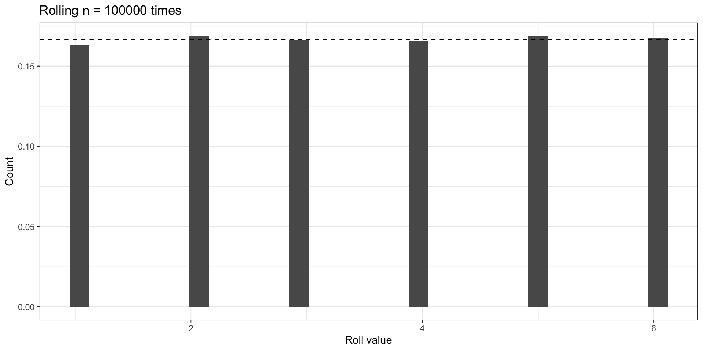
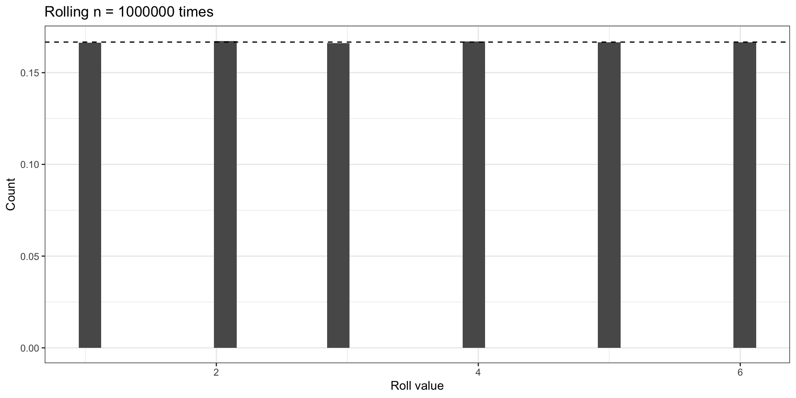
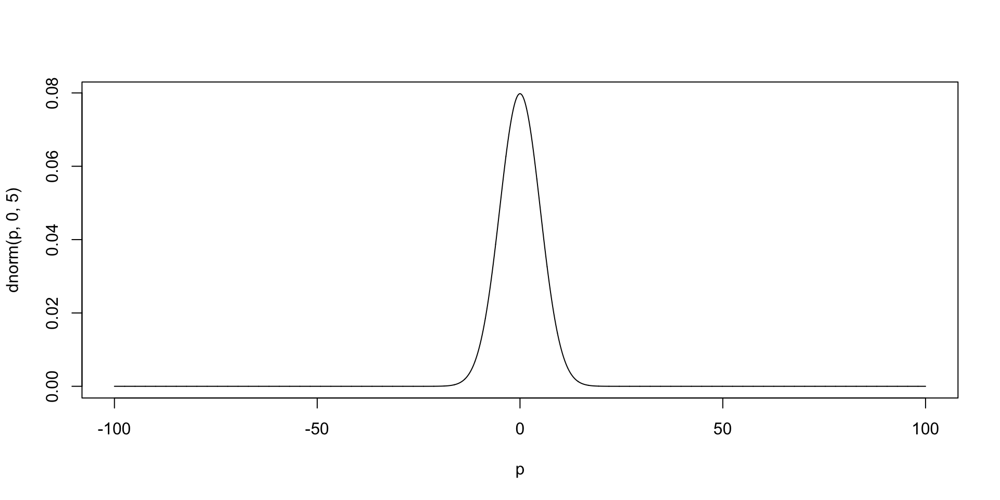
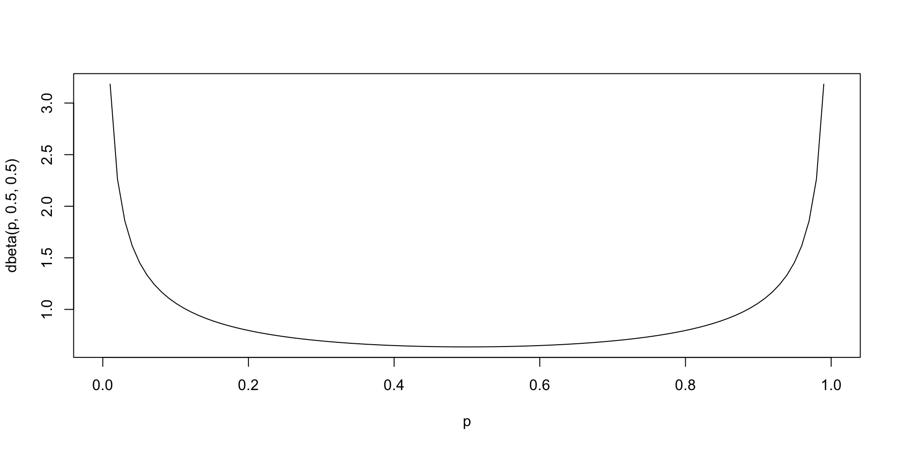
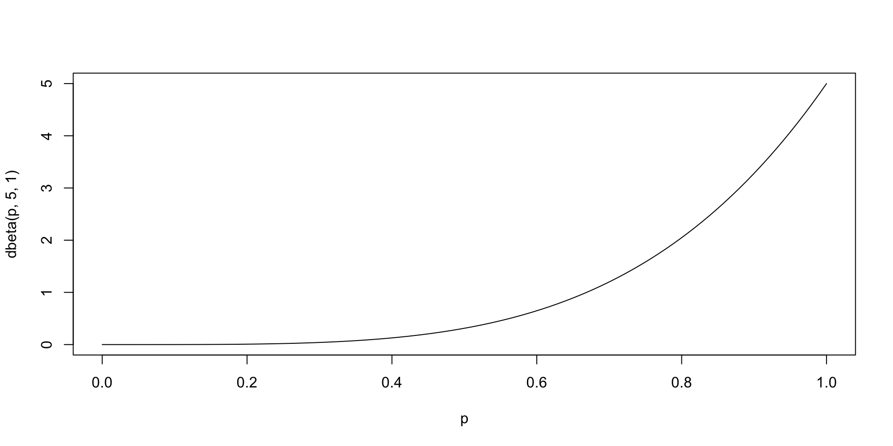
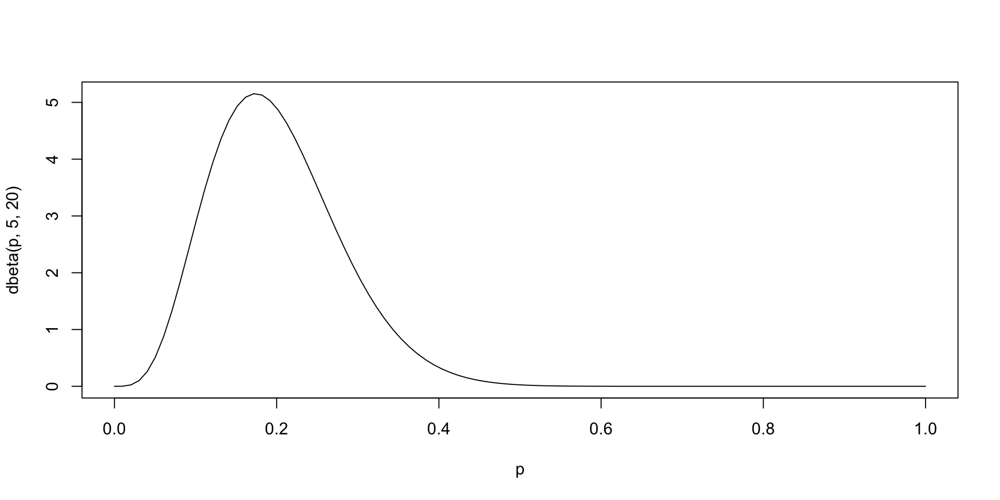
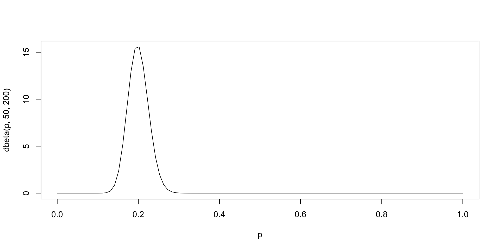

# A tibble: 6 × 4
y x1 x2 x3
<dbl> <dbl> <dbl> <dbl>
1 -0.145 -0.63 -0.8 0.24
2 0.0248 0.18 -1.06 0.24
3 -1.09 -0.84 -1.04 -0.64
4 -1.00 1.6 -1.19 -1.93
5 -0.138 0.33 -0.5 1.04
6 0.345 -0.82 -0.52 -0.28Introduction to Bayesian Methods
Key ideas and concepts
Aug 14, 2023
Outline
- Overview
- Introduction to Bayesian methods and concepts
- Using
NIMBLEfor Bayesian inference
Overview
This course is for those who
- Are interested or who have heard about Bayesian modeling.
- Work in Environmental Health (or adjacent fields).
- Have little theoretical or practical experience of Bayesian ideas.
- Would like some tools and know-how to get started in an approachable and friendly setting.
- People who would like to have some fun while learning!
- Some equations will be there but mainly for reference.
- Lots of code though throughout the two days…
R
Ris an interactive environment developed by statisticians for data analysis.- A more detailed Introduction to
Rcan be found at https://www.r-project.org. Ris the environment we will use throughout the workshop.- But this isn’t a course to learn R…
- There will lots of code, though we will restrict the equations as much as possible.
R code
- Sample
Rcode:
R code output
- Output of code:
RStudio by Posit
RStudiois an integrated development environment (IDE) forR.RStudioprovides a convenient graphical interface toR, making it more user-friendly, and providing many useful features.- Such features include direct code execution, tools for plotting, history, debugging and workspace management.
- A more detailed background on to
RStudiocan be found at https://www.rstudio.com/about/.
RStudio by Posit

Posit (RStudio) Cloud
- We will assume you have done the preliminary homework, which includes learning the basics of
RStudioCloud. RStudioCloudis a cloud-basedRStudiowhich runs projects and code in the cloud.RStudioCloudallows convenient scaling and sharing of code, including for training programs such as SHARP.- Registration for free is available via https://rstudio.cloud/.
- We will go through how to navigate
RStudioCloudtogether - More details are available via https://rstudio.cloud/learn/guide.
GitHub
- Version control to interface with
Posit(RStudio)Cloud. - This is just for information, as you will not be expected to be an expert on
GitHubto participate in thisSHARPcourse. - However, you should learn it in general as it’s really useful in today’s modern research environment.
NIMBLE
NIMBLEis one of several Bayesian inference packages.NIMBLEcode is written in a slightly unusual format if you’re used to just using baseR.- Written in the style of a program called
BUGS, developed at Imperial College London. - But you don’t really need to know about
BUGSto be able to useNIMBLE. - In the lab after this, we will start with some straightforward examples for situations you’re likely familiar with to introduce the style of writing models.
- These examples will feature basic regression models using linear predictors.
R with NIMBLE (from lab immediately after this)
- Example basic linear multi-predictor regression:
\[ \begin{split} y_i &\sim \text{Normal}(\mu_i, \sigma) \quad i = 1,..., N \\ \mu_i &= \alpha + \beta_1 x_1 + \beta_2 x_2 + \beta_3 x_3 \end{split} \]
R with NIMBLE (from lab immediately after this)
- As written in frequentist form:
R with NIMBLE (from lab immediately after this)
- Sample
NIMBLEcode:
code <- nimbleCode({
# priors for parameters
alpha ~ dnorm(0, sd = 100) # prior for alpha
beta1 ~ dnorm(0, sd = 100) # prior for beta1
beta2 ~ dnorm(0, sd = 100) # prior for beta2
beta3 ~ dnorm(0, sd = 100) # prior for beta3
sigma ~ dunif(0, 100) # prior for variance components
# regression formula
for (i in 1:n) { # n is the number of observations we have in the data
mu[i] <- alpha + beta1 * x1[i] + beta2 * x2[i] + beta3 * x3[i] # manual entry of linear predictors
y[i] ~ dnorm(mu[i], sd = sigma)
}
})R with NIMBLE (from lab immediately after this)
- Comparing frequentist (top) with
NIMBLEcode (bottom):
code <- nimbleCode({
# priors for parameters
alpha ~ dnorm(0, sd = 100) # prior for alpha
beta1 ~ dnorm(0, sd = 100) # prior for beta1
beta2 ~ dnorm(0, sd = 100) # prior for beta2
beta3 ~ dnorm(0, sd = 100) # prior for beta3
sigma ~ dunif(0, 100) # prior for variance components
# regression formula
for (i in 1:n) { # n is the number of observations we have in the data
mu[i] <- alpha + beta1 * x1[i] + beta2 * x2[i] + beta3 * x3[i] # manual entry of linear predictors
y[i] ~ dnorm(mu[i], sd = sigma)
}
})Introduction to Bayesian methods and concepts
Classical probability
- “Frequentist”.
- Limit of long-run relative frequency.
- Ratio of the number of times event occurred to the number of trials.
Classical probability

- Consider rolling a fair six-sided die many times.
- We are seeing how often we roll a \(2\).
- We roll die a large number of times (\(N\)).
- Probability that we roll a \(2\):
- \[Pr(X=2) = N(X=2)/N\]
- This will tend to \(1/6=0.16666666...\) as \(N \rightarrow \infty\)
Classical probability
# Load packages
library(ggplot2)
library(purrr)
# Create dataset
set.seed(100)
n=100
data = data.frame(x=rdunif(n,6))
# Plot
ggplot(data) +
geom_histogram(aes(x,y=after_stat(count)/sum(after_stat(count)))) +
geom_hline(yintercept = 1/6, linetype=2) +
xlab('Roll value') + ylab('Count') +
ggtitle(paste0('Rolling n = ',n,' times')) +
theme_bw()Classical probability
Classical probability
Classical probability
Classical probability
Classical probability
Subjective probability
Subjective probability
- What about the probability that it will rain tomorrow?
- What is the probability that the next president will be a very old man?
- What is the probability that aliens built the pyramids?
- Such questions cannot be answered by long-run probability.
- Degree of belief involved.
- However, long-run reasoning can inform these estimations.
- Foundation of Bayesian thinking.
Thomas Bayes and Simon Pierre Laplace
- Started with these two.
- Bayes (1701-1761) is why it’s called Bayesian.
- Sorry Laplace (1749-1825)!


Bayes theorem, prior, likelihood and posterior
\[ P(\theta|y) \propto P(y|\theta) P(\theta) \]
\(P(\theta)\) is the prior
\(P(y|\theta)\) is the likelihood
\(P(\theta|y)\) is the posterior
Prior is what is known or estimated a priori.
Likelihood is probability of data given parameters of interest.
Posterior is probability of parameters of interest given data.
Bayesian inference
- Leaving behind Frequentist inference here.
- Bayesian when prior is unknown and is distribution is specified.
- Bayes theorem exists in frequentist world, but here prior is a distribution.
- Prior + Data -> Posterior.
Choosing the prior distribution (conjugate or not)
- Prior choice can be vital.
- Type of distribution (we will see in a second).
- Hyperparameters/hyperpriors.
- Often a ‘natural’ candidate for prior choice.
- Mathematically solvable or not.
- Some are solvable (conjugate).
- Most are not (non-conjugate)…
Conjugacy
- When the posterior is an analytical solution of the prior and data.
- Examples include:
- Normal data and Normal prior (you’ll see an example in a minute).
- Binomial data and Beta prior (logistic regression).
- Poisson data and Gamma prior (useful for counts).
Non-conjugacy (most of the time)
- Because most prior-data-posterior relationships are non-conjugate.
- Need non-analytical solution to infer distributions.
- This is where ‘brute force’ sampling of distributions takes place.
Sampling posterior
- Example basic linear multi-predictor regression:
\[ \begin{split} y_i &\sim \text{Normal}(\mu_i, \sigma) \quad i = 1,..., N \\ \mu_i &= \alpha + \beta_1 x_1 + \beta_2 x_2 + \beta_3 x_3 \\ \alpha &= 0 \\ \beta_1 &= 0.2 \\ \beta_2 &= 0.5 \\ \beta_3 &= 0.3 \\ \sigma &= 0.5\\ \end{split} \]
Sampling posterior

Informative or non-informative priors
- Main source of intrigue from non-Bayesians is how priors are chosen.
- Priors should be informed by existing knowledge.
- But what if we don’t know anything really prior to inference?
- Most of the time we will not have analytical solutions (more on that later).
- Non-informative/informative priors outside scope of this but something to pay attention to.
Example of influence of priors on sampling
- Wide priors
code <- nimbleCode({
# priors for parameters
alpha ~ dnorm(0, sd = 100) # prior for alpha
beta1 ~ dnorm(0, sd = 100) # prior for beta1
beta2 ~ dnorm(0, sd = 100) # prior for beta2
beta3 ~ dnorm(0, sd = 100) # prior for beta3
sigma ~ dunif(0, 100) # prior for variance components
# regression formula
for (i in 1:n) { # n is the number of observations we have in the data
mu[i] <- alpha + beta1 * x1[i] + beta2 * x2[i] + beta3 * x3[i] # manual entry of linear predictors
y[i] ~ dnorm(mu[i], sd = sigma)
}
})Example of influence of priors on sampling
- Wide priors

Example of influence of priors on sampling
- Worse priors
code_worse_priors <- nimbleCode({
# priors for parameters
alpha ~ dnorm(0, sd = 100) # prior for alpha
beta1 ~ dnorm(0, sd = 100) # prior for beta1
beta2 ~ dunif(100, 100000) # prior for beta2
beta3 ~ dnorm(0, sd = 100) # prior for beta3
sigma ~ dunif(0, 100) # prior for variance components
# regression formula
for (i in 1:n) {
mu[i] <- alpha + beta1 * x1[i] + beta2 * x2[i] + beta3 * x3[i] # manual entry of linear predictors
y[i] ~ dnorm(mu[i], sd = sigma)
}
})Example of influence of priors on sampling
- Worse priors
MCMC, Gibbs, approximations to sampling (variational inference)
- Many different types.
- Others in the workshop will discuss these briefly
- For now, let us focus on building a simple model.
Non-conjugate how to get posterior?
- Some kind of software to help us implement models for inference.
- Using
R. - Packages (
BUGS,STAN,INLAetc.). - We will be focusing on using
NIMBLEthroughout the two days.
Using NIMBLE for Bayesian inference
Why we’re using NIMBLE for (almost) everything during the workshop
- Interpretability.
- Flexibility.
- There are other Bayesian packages.
- You will see on Day 2…
Illustrative example of basic regression in NIMBLE
- Let’s go through an example from the upcoming lab
Linear regression
- Example basic linear multi-predictor regression:
\[ \begin{split} y_i &\sim \text{Normal}(\mu_i, \sigma) \quad i = 1,..., N \\ \mu_i &= \alpha + \beta_1 x_1 + \beta_2 x_2 + \beta_3 x_3 \\ \alpha &= 0 \\ \beta_1 &= 0.2 \\ \beta_2 &= 0.5 \\ \beta_3 &= 0.3 \\ \end{split} \]
Linear regression
- First create some example data for our model:
set.seed(1)
p <- 3 # number of explanatory variables
n <- 10000 # number of observations
X <- matrix(round(rnorm(p * n), 2), nrow = n, ncol = p) # explanatory variables
true_betas <- c(c(0.2, 0.5, 0.3)) # coefficients for beta1, beta2, beta3
sigma <- 0.5 # variance of variability around perfect agreement
y <- rnorm(n, X %*% true_betas, sigma)Linear regression
- What does the dataset look like?
Linear regression
- What does equivalent frequentist model output look like for reference?
Linear regression
- What does equivalent frequentist model output look like for reference?
2.5 % 97.5 %
(Intercept) -0.00272699 -0.01251412 0.007060142
x1 0.20196677 0.19229912 0.211634407
x2 0.49277663 0.48289869 0.502654568
x3 0.29160573 0.28189340 0.301318063Linear regression
NIMBLEadopts and extendsBUGSas a modeling language and lets you program with the models you create.- Looks like below (as seen earlier in lecture and later in lab).
library(nimble)
code <- nimbleCode({
# priors for parameters
alpha ~ dnorm(0, sd = 100) # prior for alpha
beta1 ~ dnorm(0, sd = 100) # prior for beta1
beta2 ~ dnorm(0, sd = 100) # prior for beta2
beta3 ~ dnorm(0, sd = 100) # prior for beta3
sigma ~ dunif(0, 100) # prior for variance components
# regression formula
for (i in 1:n) { # n is the number of observations we have in the data
mu[i] <- alpha + beta1 * x1[i] + beta2 * x2[i] + beta3 * x3[i] # manual entry of linear predictors
y[i] ~ dnorm(mu[i], sd = sigma)
}
})Linear regression
- Setting up data (will explain more in lab)
Linear regression
- Run the MCMC simulations. There are lots of arguments in the main function, nimbleMCMC().
Linear regression
- Run the MCMC simulations. There are lots of arguments in the main function, nimbleMCMC().
|-------------|-------------|-------------|-------------|
|-------------------------------------------------------|Time difference of 51.01255 secsLinear regression
- What is the summary of each estimated parameter from the samples? The following operations will help us understand.
Linear regression
- What is the summary of each estimated parameter from the samples? The following operations will help us understand.
# A tibble: 5 × 7
variable mean median sd mad q5 q95
<chr> <num> <num> <num> <num> <num> <num>
1 alpha -0.00395 -0.00388 0.00500 0.00498 -0.0122 0.00426
2 beta1 0.202 0.202 0.00492 0.00485 0.194 0.210
3 beta2 0.493 0.493 0.00506 0.00511 0.484 0.501
4 beta3 0.292 0.292 0.00499 0.00502 0.283 0.300
5 sigma 0.499 0.499 0.0122 0.00372 0.493 0.505 Linear regression
- Then examine how well the model has converged, which typically is identified by how close each rhat value is to 1.00.
Linear regression
- Then examine how well the model has converged, which typically is identified by how close each rhat value is to 1.00.
# A tibble: 5 × 4
variable rhat ess_bulk ess_tail
<chr> <num> <num> <num>
1 alpha 1.00 9936. 9714.
2 beta1 1.00 10026. 10110.
3 beta2 1.00 9990. 9857.
4 beta3 1.00 9536. 9755.
5 sigma 1.00 665. 190.Linear regression
- What do the samples of one of the unknown parameters actually look like?
Linear regression
- What do the samples of one of the unknown parameters actually look like?
Linear regression
Let’s now focus on beta1 (which we know is 0.2 from setting up initially).
Linear regression
Let’s now focus on beta1 (which we know is 0.2 from setting up initially).
Linear regression
Plotting beta1 samples (posterior) as a histogram…
Getting ready for the lab
The lab for this session
This lab will involve taking some models and concepts from the Introduction to Bayesian Methods lecture and introduce you to the way
NIMBLEworks.During this lab session, we will:
- Explore how
NIMBLEis written and works; - Write some common regression models (Normal, logistic regression, Poisson);
- Understand how basic model assessment is made; and
- Test out how adjustments of models are made via different priors and more samples.
Questions?
Extra
Conditional probability
- Two events \(A\) and \(B\).
- Conditional event \(A\) given \(B\).
- \[ P(A|B) = \frac{P(A \cap B)}{P(B)} \]
Conditional probability
Conditional probability
In a group of 100 SHARP workshop attendees, 40 chose to stay in Manhattan, 30 chose to stay for the entire week, and 20 chose to stay in Manhattan and for the entire week. If a car buyer chosen at random chose to stay in Manhattan, what is the probability they chose to stay for the entire week?
\[ P(A|B) = \frac{P(A \cap B)}{P(B)} = 20 / 40 = 0.5 \]
Conditional probability
- \[ P(A|B) = \frac{P(A \cap B)}{P(B)} \]
- can also be written as…
- \[ P(A \cap B) = P(A|B) P(B) \]
- Also…
- \[ P(B|A) = \frac{P(A \cap B)}{P(A)} \]
- Substituting top into bottom gets…
- \[ P(B|A) = \frac{P(A|B) P(B)}{P(A)} \]
Example of a conjugate pair: Normal-Normal
Likelihood
Normal distribution is defined by two parameters \(\mu\) and \(\sigma\).
Bell curve.
\(\mu\) is mean.
\(\sigma\) is standard deviation.
\[ y|\mu,\sigma \sim Normal(\mu,\sigma^2) \]
Prior
Normal distribution is mathematically the conjugate of itself, with hyperparameters \(\mu_0\) and \(\sigma_0\).
\[ \mu \sim Normal(\mu_0,\sigma_0^2) \]
Normal-Normal
- Posterior
- Because of conjugacy, there is an analytical solution for the posterior which is also normally distributed.
- But this is usually not that useful when models get very complicated.
Examples of Normal distributions
\[Normal(1,0)\]
Examples of Normal distributions
\[Normal(1,0)\]
Examples of Normal distributions
\[Normal(0,5)\]
Examples of Normal distributions
\[Normal(0,20)\]
Binomial-Beta
Likelihood
Binomial distribution is when there is success (1) or failure (0) with the proportion of success (\(\pi\)).
\(n\) trials.
\[ y|\pi \sim Binomial(\pi,n) \]
Prior
Beta distribution is mathematically the conjugate of binomial defined by two parameters \(a\) and \(b\).
Beta distributuon is ‘natural’ fit becasue it ranges from 0 to 1.
\[ \pi \sim Beta(a,b) \]
Binomial-Beta
Posterior
Because of conjugacy, there is an analytical solution for the posterior.
\[ p(\pi|y) \sim Beta(y+a,n-y+b) \]
Examples of Beta distributions
\[Beta(2,10)\]
Examples of Beta distributions
\[Beta(0.5,0.5)\]
Examples of Beta distributions
\[Beta(5,1)\]
Examples of Beta distributions
\[Beta(5,5)\]
Examples of Beta distributions
\[Beta(5,20)\]
Examples of Beta distributions
\[Beta(50,200)\]
Types of conjugate pairs: Poisson-Gamma
Likelihood
Normal distribution is defined by on parameters \(\lambda\).
Very common for count data.
\(\lambda\) is rate.
\[ y|\lambda \sim Poisson(\lambda) \]
Prior
Gamma distribution is mathematically the conjugate of Poisson, with hyperparameters \(\mu_0\) and \(\sigma_0\).
Gamma distributuon is ‘natural’ fit becasue it ranges from 0 to \(\infty\).
\[ \lambda \sim Gamma(a,b) \]
Poisson-Gamma
Posterior
Because of conjugacy, there is an analytical solution for the posterior.
\[ \rho | y \sim Gamma(a+y,b+E) \]
Examples of Gamma distributions
\[Gamma(0.1,0.1)\]
Examples of Gamma distributions
\[Gamma(1,1)\]
Examples of Gamma distributions
\[Gamma(3,3)\]
Examples of Gamma distributions
\[Gamma(3,0.5)\]